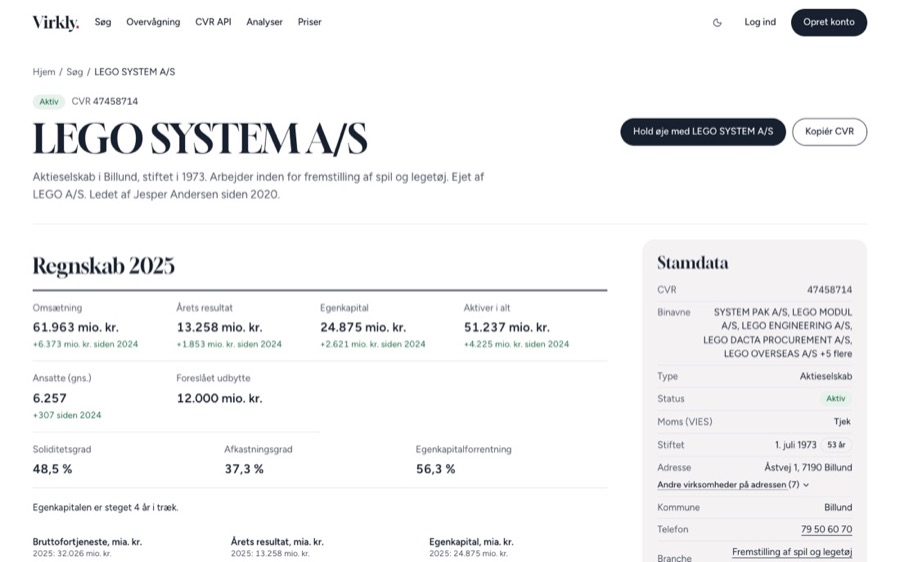
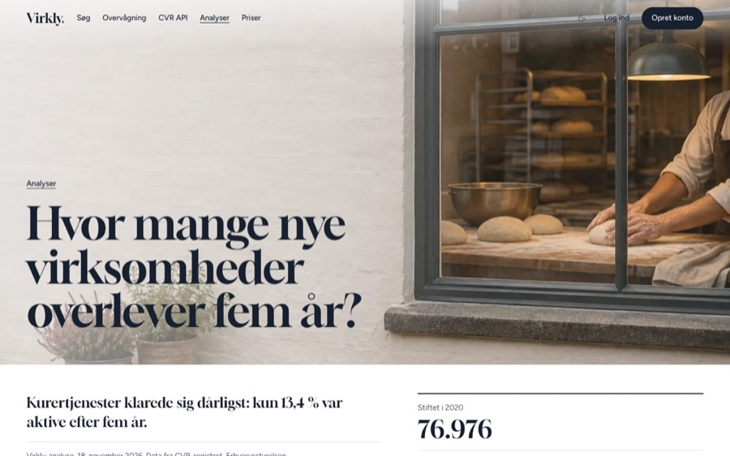

- Now
- Head of Engineering, FlightLogger
- Before
- Head of Engineering, Scaleup Finance and Nume
- Working on
- Moving a team towards building with AI and agentic flows
- Likes
- Start small, ship fast, automate everything
- Otherwise
- Running and reading
Side project
Virkly
- What
- Danish company data: owners, management and accounts for every company in the CVR register
- How
- Mostly built by AI agents
- Why
- A product of my own, and where I learn
- Where
- virkly.io

